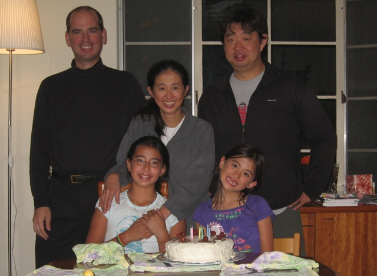

This is the family web site of Rebecca Shen and Mark Fussell (and now Maya Fussell and Katrina Fussell). Rebecca and Mark met in 1984, were married in 1999, and had their first daughter Maya in 2000, and their second daughter Katrina in 2003. Currently Mark is working at Rumble building a platform for AAA freemium games. He also spends a lot of time teaching kids about robots, computers, and teamwork via PaloBots. Rebecca is working to help schools have better programs.
This site is from about 2002, but is slowly being modernized to 2012. Currently this site has sections on:
In the future the site may have other family albums and information.
|  |
...Enjoy
Rebecca and Mark